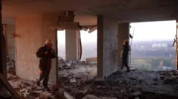

When the CIA and US Air Force deployed the Predator drone over Afghanistan in October 2001 — the first recorded use of armed drones in combat — it was hailed as a revolution in warfare. Precise. Remote. Surgical. Politicians and generals promised a new era where wars could be fought without body bags coming home. That promise has not aged well.
A snapshot of the present
While drones once seemed like a futuristic tool for counter-terrorism, they are now a staple of conventional conflict, deployed by over 80 countries globally. According to reports over 22,000 civilian casualties have been attributed to drone strikes across Afghanistan, Pakistan, Yemen, Somalia, and Gaza since 2004.Global military drone spending surpassed $12.5 billion in 2023, projected to nearly double by 2030. Over 100 state and non-state actors now operate weaponised drones — up from just 3 in 2001
"The 'precision weapon' is now the defining instrument of civilian suffering across four continents."
Who strikes, who suffers
The major perpetrators span state and non-state lines: the United States, Israel, Turkey, Russia, and Iran-backed militias lead drone deployment globally. The victims are overwhelmingly concentrated in the Global South — Yemen, Gaza, Sudan, Myanmar, and the Sahel — nations with weak air defences and limited legal recourse.
Drone warfare doesn't just kill. Studies from Pakistan's FATA region show that communities under persistent drone surveillance experience PTSD rates comparable to active combat zones — children afraid to attend school, farmers abandoning fields.

A governance vacuum
International Humanitarian Law — specifically the principles of distinction, proportionality, and precaution — technically governs drone use. In practice, accountability is almost nonexistent. The United States did not officially acknowledge its drone programme until 2016. Turkey's operations in Syria remain largely uninvestigated by international bodies.
There is no binding international treaty specifically regulating armed drones, and the UN Special Rapporteur's repeated calls for a moratorium have gone unheeded by major powers.
What must change
The path forward demands multilateral urgency:
The United Nations must push for a binding legal framework specifically covering autonomous and remote weapons systems. The ICRC should expand its IHL monitoring mandate to include algorithmic targeting accountability. Regional bodies — the AU, Arab League, and EU — must establish drone-use transparency and civilian casualty reporting mechanisms.
DISEC can itself recommend a mandatory civilian casualty reporting protocol for all member states operating drones in conflict zones — a concrete, implementable step that would mark a turning point.
Drone warfare isn't going away. But the choice between military utility and civilian protection is fundamentally political — and that makes it fundamentally solvable.